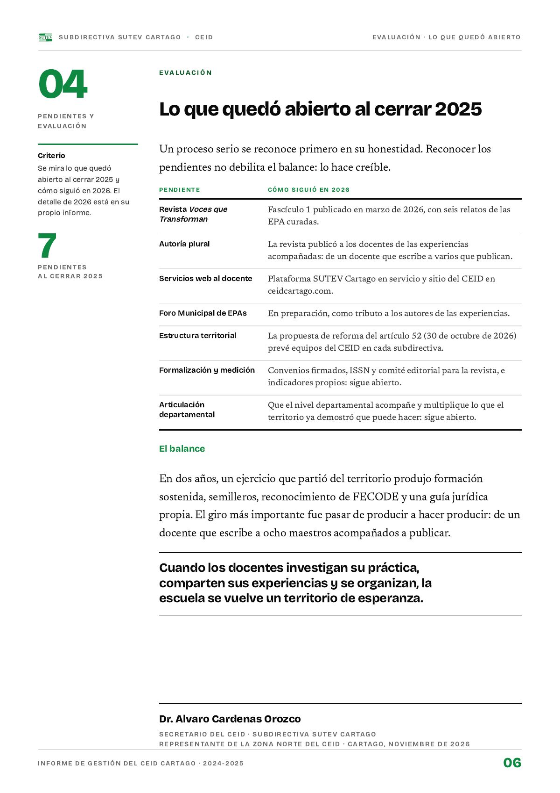

Lo que quedó abierto al cerrar 2025
Un proceso serio se reconoce primero en su honestidad. Reconocer los pendientes no debilita el balance: lo hace creíble.
PDF · 1 pág. · 186 KBUn proceso serio se reconoce primero en su honestidad. Reconocer los pendientes no debilita el balance: lo hace creíble. Aquí se mira lo que quedó abierto al cerrar 2025 y cómo siguió en 2026; el detalle de 2026 está en su propio informe.
Siete pendientes y cómo siguieron
- Revista Voces que Transforman. Fascículo 1 publicado en marzo de 2026, con seis relatos de las EPA curadas.
- Autoría plural. La revista publicó a los docentes de las experiencias acompañadas: de un docente que escribe a varios que publican.
- Servicios web al docente. Plataforma SUTEV Cartago en servicio y sitio del CEID en ceidcartago.com.
- Foro Municipal de EPAs. En preparación, como tributo a los autores de las experiencias.
- Estructura territorial. La propuesta de reforma del artículo 52 (30 de octubre de 2026) prevé equipos del CEID en cada subdirectiva.
- Formalización y medición. Convenios firmados, ISSN y comité editorial para la revista, e indicadores propios: sigue abierto.
- Articulación departamental. Que el nivel departamental acompañe y multiplique lo que el territorio ya demostró que puede hacer: sigue abierto.
El balance
En dos años, un ejercicio que partió del territorio produjo formación sostenida, semilleros, reconocimiento de FECODE y una guía jurídica propia. El giro más importante fue pasar de producir a hacer producir: de un docente que escribe a ocho maestros acompañados a publicar.
Cuando los docentes investigan su práctica, comparten sus experiencias y se organizan, la escuela se vuelve un territorio de esperanza.
Firma el informe Alvaro Cardenas Orozco, secretario del CEID de la Subdirectiva SUTEV Cartago y representante de la Zona Norte del CEID (Cartago, noviembre de 2026).
Así se ve en el informe
1 página